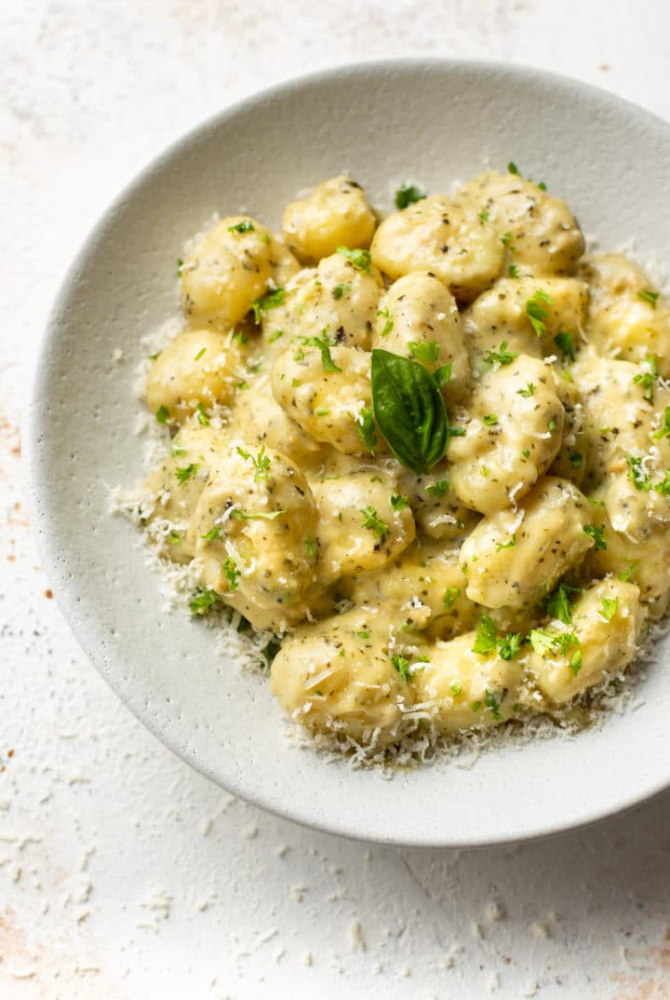

Pesto Gnocci

This recipe will teach you how to make a scrumptious creamy pesto gnocci.
This recipe is easy to make and will give you a dish you can be proud of.
It only takes a few ingredients and roughly 20 minutes from start to finish!
This recipe includes freshly shaved parmesan and a lot of garlic.
For best results, be sure to shave fresh parmesan and use real garlic
instead of any garlic powder.
Ingredients
- 1/4 cup pesto
- 1 cup heavy/whipping cream
- 1/4 cup dry white wine or chicken broth
- 2 cloves garlic minced
- 1 pound uncooked potato gnocchi
- 1/2 cup freshly grated parmesan cheese
- Salt & pepper to taste
Steps
- Add the pesto, cream, wine, and garlic to a deep skillet over medium heat.
- Once the sauce starts to gently bubble, stir in the gnocchi.
Cover the pan and cook for 5 minutes.
- Uncover the pan and give it a good stir. Continue to cook it for a couple more minutes,
stirring often (the sauce will thicken quickly as the gnocchi releases more starch).
- Once the sauce is thickened to your liking, stir in the parmesan cheese.
If the sauce gets too thick at any point, add in another splash of wine or cream.
Season with extra salt & pepper as needed and serve immediately.